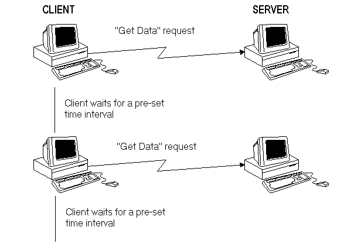
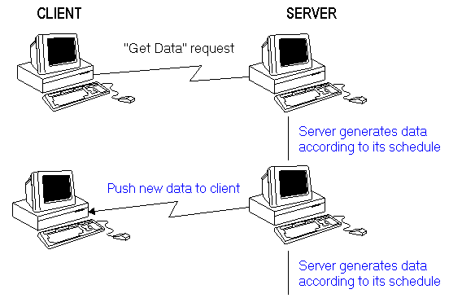
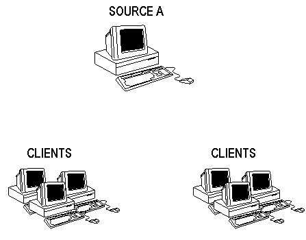
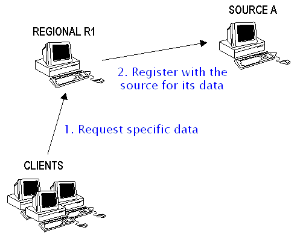
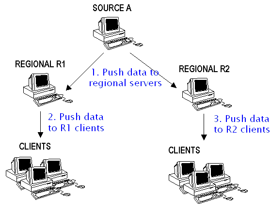

TECHNOLOGY USED IN INTERNET BROWSING.
In a typical Internet browsing Web servers publish arbitrary content.
Clients "pull" content from the servers that publish the content.
Server does not initiate any data transfer through the network until asked to do so.
Clients send requests to the servers directly.
POPULAR PUSH TECHNOLOGY.
Clients want to keep updated with the new data a server generates.
Often push technology is associated with periodic distribution of published content.
Clients receive content updates automatically.
Push technology implies that a server initiates content delivery to their clients.

WIDELY KNOWN APPLICATIONS (INTERNET).
Most commercial applications use "pull" technology.
PointCast network:
- Rich information content
- Highly configurable
- Custom supported by source servers
- Update frequency of 15 minutes.
WorldFlash:
- Simple user interface with just essential functions
- One-man development team
- HTML parsing C library
- Uses standard HTML pages from many public sources
- Update frequency of about 2 minutes.
Corporate information pushed via intranets (BackWeb, Intermind)
MARKET TRENDS.
Major Internet content providers keep up with the market:
Yahoo news ticker by NetControls, Inc. (places on Windows task bar)
Excite has a similar ticker
Microsoft inserts ActiveX control in the home page
Netscape incorporates push support in Communicator 4
Attempts to create development frameworks:
- Proposals for HTML extensions and new standards (e.g. Microsoft's CDF)
- Simple HTML parsing libraries
IMPLEMENTATION OF SIMPLE APPLICATIONS.
Simple applications can be implemented using existing technologies.
Pull technology seems to be sufficient so far for information that is not time or content critical.
Such applications limit the frequency of updates due to the transfer and server process capacities.
DELIVERING MORE THAN PUBLISHED CONTENT.
Marimba provides a large framework to deliver not just ASCII data, but binary data and executable code.
Uses the concept of periodic updates initiated by the client application.
Adds transparent version control to allow almost permanent access to the latest code and data.
Attempts to standardize distribution of data and code over the Internet through a new protocol and Java class framework.
Bypasses exiting data format and security restrictions.
Creates a simple hierarchy of transmitter-repeater servers. Repeaters pull data from transmitters. Clients still send direct requests to a transmitter.
FINANCIAL APPLICATIONS.
Major financial data providers have created proprietary implementations of the push technology.
Dedicated lines used in most cases.
Internet is not used in most cases.
Very expensive solutions and, probably, very costly.
OTHER EXISTING APPLICATIONS OF PUSH TECHNIQUE.
RealAudio and RealVideo.
Normally server establishes a UDP connection to the client and sends binary stream.
If a firewall is present the client has to create a TCP/IP connection, which is slower.
To listen to a desired record a user can request an audio stream from an audio server. Present technology fully supports such request.
If the audio server worked as a radio station, server would push audio stream of the type specified by the client, which could start playing in the background.
"PURE" PUSH TECHNOLOGY.
Client registers with a server to receive specific information.
Server generates new data according to its own schedule and makes the data generation a priority.
Server initiates connection and sends the new data immediately after generation.

BENEFITS OF THE PUSH TECHNOLOGY.
Convenience of information delivery just when it is necessary.
Clients do not have to waste cycles and network traffic to poll servers.
Servers can use more processor time for data production rather than to process numerous client requests and send much data over the network.
Servers can better manage the amount of data transferred over the network.
A hierarchy of servers supplying the same data can create efficient content distribution and scaleable client-server implementations.
DRAWBACKS OF PUSH TECHNOLOGY.
Servers cannot push data to clients that connect to the network occasionally (disconnected environment). Such clients must use pull.
Push servers need to maintain state.
Potential security problems with server initiated data transfer. New protocols or changes in the exiting protocols are required.
Major benefit of the push technology, scaleable implementations, can be achieved only with a hierarchy of servers. Distribution through hierarchy is more involved than simple client-to-server request and adds software and hardware requirements.
FUTURE USE OF THE PUSH TECHNOLOGY: AUTOMATED UPDATES.
Automated updates of data and code exist now but do not use push technology.
Such applications can be more efficient with push technology.
Many users want to keep up with the latest news.
Many vendors release versions of their software every three months, patches even more often. Large vendors could set up regional distribution servers to keep clients updated.
FUTURE USE OF THE PUSH TECHNOLOGY: DELAY-SENSITIVE UPDATES.
Users of financial data may need to receive new information immediately.
Due to large amount of data servers cannot quickly respond to many clients.
No preset schedule for creation of new data exists.
Clients want to filter data and receive much smaller parts of information available at the source server.
Hierarchical distribution with push technology would fit such applications well.
There is money in this industry area to support Internet implementation of push technology.
FUTURE USE OF THE PUSH TECHNOLOGY: CLIENT-SERVER OVER WAN.
There is interest in the industry for implementation of existing client-server solutions using Internet medium.
Despite a number of ways to create such implementation there is no standard or proven way to make it work.
Creation of standard push protocols and hierarchies would simplify development of many custom applications.
Clients do not have to keep permanent connection to the server.
Server can notify client of database object changes at the time of change and push data to them.
FUTURE USE OF THE PUSH TECHNOLOGY: OTHER POSSIBILITIES.
Conferencing: simple applications of push technology could be used to extend this area.
Web robot type of applications could use the push technology instead of mail notifications.
TECHNOLOGICAL ISSUES.
Server can frequently generate new data.
No scaleable solution for single server with numerous clients - "pull" technology implies that a source server waits for client requests and sends data back according to client's request.
Security considerations: server is not allowed to establish a connection to a client to send any data or code.
LARGE AMOUNT OF DATA.
Server may frequently generate large amount of data.
Not all the data have to be sent to all clients.
Either server or client can filter the data to reduce network traffic.
More efficient protocols, special data formats, and data compression improve network traffic.
HIERARCHIES MAKE THE TECHNOLOGY SCALEABLE.
Server hierarchy allows to reduce network traffic substantially and to achieve a better use of server processing time.
Data has to be sent through long network routes once, not once for every client.
Each node in a hierarchy may filter data to send through the network just the data clients need.
Structure of the hierarchy may allow for dynamic extension of the network by adding new nodes at any level.
HOW TO BUILD A HIERARCHY: SOURCE AND CLIENTS.

- Source generates a certain type of data.
- Source makes its type known to the clients through a directory service.
- Clients can access directory and find out what types of data are available.
HOW TO BUILD A HIERARCHY: CLIENTS REQUEST DATA.

- Clients know about their regional servers.
- Clients request specific data by sending requests to the regional server.
- Regional server receives client request and registers with the source.
HOW TO BUILD A HIERARCHY: SOURCE PUSHES DATA.

- Source server pushes data to the regional servers.
- The regional servers push data to their respective clients.
Note: Events 2 and 3 occur independently in time from each other.
SECURITY CONSIDERATIONS.
New protocols may create a safe standard for server-initiated distribution.
Hierarchies may create new requirements for security standards.
SOURCES AND REFERENCES.
PointCast Network home page.
WorldFlash home page.
Marimba's Castanet overview.
Microsoft's home page, Microsoft's Channel Definition Format press release.
Spring 1996 semester presentations for Advanced Distributed Systems (CS667).
The Bloomberg Terminal.
RealAudio information on firewalls.
Netscape Communicator 4.0.